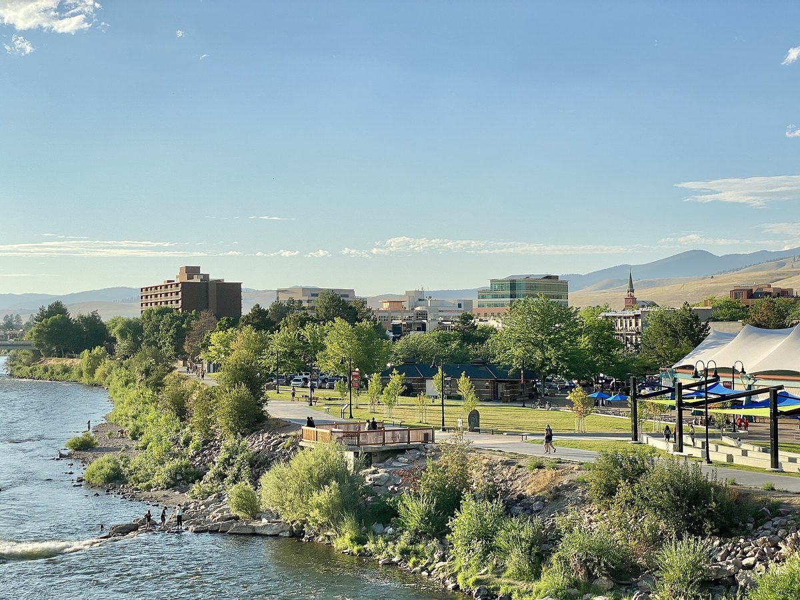

미국 미줄라 시민 기후기금, 연방 지원 끊긴 자리 메워…비영리 자재점 60kW 태양광에 모자란 8,000달러 보태

클라이밋 스마트 미줄라 '기후 촉매 기금', 개인 기부와 지역 신용협동조합 출연으로 탄소 감축 사업의 마지막 공백 채워…저소득 공공임대 12세대 열펌프 차액도 지원
미국 몬태나주 미줄라의 비영리단체 클라이밋 스마트 미줄라(Climate Smart Missoula)가 개인 기부와 지역 신용협동조합 돈으로 꾸린 '기후 촉매 기금(Climate Catalyst Fund)'으로 탄소 감축 사업의 모자란 사업비를 메우고 있다. 비영리 재사용 건축자재점 홈 리소스(Home ReSource)는 지붕이 하중을 견디지 못해 패널 115장 규모 태양광을 지상형으로 바꿔 짓느라 비용과 시간이 늘었고, 전력회사 씨앗 보조금과 재단 매칭 자금, 연방 세액공제를 모으고도 8,000달러가 모자라 사업을 접을 뻔했다. 이 빈자리를 기후 촉매 기금이 채워 60kW 설비가 가동에 들어갔고, 지금은 시설 전기의 100%를 태양광으로 쓴다. 기금은 미줄라 주택청의 저소득층 공공임대 코너스톤 아파트 원룸 12세대가 예산 부족으로 값싼 전기 걸레받이 난방기를 들일 처지에 놓이자 열펌프와의 차액을 대 주기도 했다. 기금에는 탄소중립을 목표로 하는 지역 신협 클리어워터(Clearwater Credit Union)의 출연이 들어갔으며, 연방 인플레이션감축법(IRA) 지원이 취소되고 생활비 부담이 커지자 단체는 가구·주민 지원 쪽으로 기금 우선순위를 넓혔다. 에이미 실림버그(Amy Cilimburg) 사무총장은 다른 재원이 빠지면서 빈틈을 메우는 일이 "훨씬 더 필수적"이 됐다고 말했다.
시민에너지 관점
무산 직전까지 갔던 60kW 태양광이 8,000달러로 살아난 것은, 큰 보조금보다 마지막 몇 퍼센트를 채워 줄 지역 돈이 사업의 성패를 가르기도 한다는 점을 보여 준다. 기부에 기대는 기금은 규모가 작아 한계가 뚜렷하다는 지적이 있을 수 있지만, 지역 신협이 자기 탄소중립 목표의 하나로 돈을 보태면서 일회성 모금에 그치지 않는 재원 통로가 생겼다. 중앙 정부 지원이 흔들릴 때 비영리 시설과 저소득 가구의 에너지 전환을 지켜 주는 것은 지역 주민과 지역 금융이 함께 만들고 운용하는 기금이다. 국내 신협·새마을금고 같은 지역 금융도 시민 기금과 손잡고 작은 태양광과 취약계층 효율 개선의 공백을 메우는 역할을 맡아야 한다.
출처: Montana Free Press 2026-10-29 Ellis Juhlin 원문 보기
米ミズーラの市民気候基金、途絶えた連邦支援の穴を埋める…非営利資材店の60kW太陽光に不足していた8,000ドルを補填
クライメート・スマート・ミズーラの「気候触媒基金」、個人寄付と地域の信用協同組合の拠出で炭素削減事業の最後の空白を埋める…低所得者向け公営住宅12戸のヒートポンプ差額も支援
米モンタナ州ミズーラの非営利団体クライメート・スマート・ミズーラ（Climate Smart Missoula）が、個人の寄付と地域の信用協同組合の資金でつくった「気候触媒基金（Climate Catalyst Fund）」で、炭素削減事業の不足資金を埋めている。非営利の建築資材リユース店ホーム・リソース（Home ReSource）は、屋根が重さに耐えられず115枚のパネルの太陽光を地上設置型に変えたため費用と時間が膨らみ、電力会社のシード補助金や財団のマッチング資金、連邦税額控除を集めてもなお8,000ドルが足りず、事業を断念しかけた。この穴を気候触媒基金が埋めたことで60kWの設備が稼働し、いまでは施設の電力の100%を太陽光で賄っている。基金はまた、ミズーラ住宅公社の低所得者向け公営住宅コーナーストーン・アパートのワンルーム12戸が予算不足で安価な電気式幅木ヒーターを入れざるを得なくなった際、ヒートポンプとの差額を負担した。基金にはカーボンニュートラルを目指す地域の信用協同組合クリアウォーター（Clearwater Credit Union）の拠出が入っており、連邦インフレ抑制法（IRA）の支援が取り消され生活費の負担が増すなか、団体は基金の優先対象を世帯・住民支援へと広げた。エイミー・シリンバーグ（Amy Cilimburg）事務局長は、ほかの財源が引き揚げられるなかで、空白を埋める取り組みは「はるかに不可欠」になったと語った。
市民エネルギーの視点
頓挫寸前だった60kWの太陽光が8,000ドルで息を吹き返したことは、大きな補助金よりも最後の数パーセントを埋める地域のお金が事業の成否を分けることもあると示している。寄付に頼る基金は規模が小さく限界がはっきりしているとの指摘もありうるが、地域の信用協同組合が自らのカーボンニュートラル目標の一環として資金を出したことで、一度きりの募金に終わらない財源の通り道ができた。中央政府の支援が揺らぐとき、非営利施設や低所得世帯のエネルギー転換を守るのは、地域住民と地域金融が一緒につくり運用する基金だ。韓国の信用協同組合やセマウル金庫のような地域金融も、市民基金と手を組み、小さな太陽光や脆弱層の省エネ改善の空白を埋める役割を担うべきだ。
出典: Montana Free Press 2026-10-29 エリス・ジュリン（Ellis Juhlin） 原文を読む
美国米苏拉市民气候基金填补联邦支持缺口…为非营利建材店60kW光伏补上短缺的8,000美元
"气候智慧米苏拉"的"气候催化基金"以个人捐款和地方信用合作社出资填补减碳项目的最后缺口…还为低收入公共租赁住房12户补贴热泵差价
美国蒙大拿州米苏拉的非营利组织"气候智慧米苏拉"（Climate Smart Missoula）用个人捐款和地方信用合作社资金设立的"气候催化基金"（Climate Catalyst Fund），正在为减碳项目填补资金缺口。非营利二手建材商店"家园资源"（Home ReSource）因屋顶承重不足，只好把115块光伏板改为地面安装，费用和工期随之增加，在凑齐电力公司种子补助、基金会配套资金和联邦税收抵免之后仍差8,000美元，项目险些搁浅。气候催化基金补上这一缺口后，60kW设施投入运行，如今该店设施用电100%来自太阳能。该基金还在米苏拉住房管理局低收入公共租赁住房"基石公寓"的12套单间因预算不足、只能改装廉价电踢脚线取暖器时，承担了与热泵之间的差价。基金的资金中包括以碳中和为目标的地方信用合作社"清水"（Clearwater Credit Union）的出资；在联邦《通胀削减法》（IRA）支持被取消、生活成本压力加大之后，该组织把基金的优先方向扩大到家庭和居民支持。总干事埃米·西林伯格（Amy Cilimburg）表示，随着其他资金来源撤出，填补缺口的工作已变得"更加不可或缺"。
市民能源视角
一度濒临夭折的60kW光伏项目靠8,000美元起死回生，说明决定项目成败的有时不是大额补贴，而是补上最后几个百分点的本地资金。有人会指出依赖捐款的基金规模小、局限明显，但地方信用合作社把出资作为自身碳中和目标的一部分，开辟了一条不止于一次性募捐的资金渠道。当中央政府的支持动摇时，守护非营利设施和低收入家庭能源转型的，是由当地居民和地方金融共同设立、共同运营的基金。韩国的信用合作社、新村金库等地方金融机构，也应与市民基金携手，承担起填补小型光伏和弱势群体能效改造缺口的角色。
来源: 蒙大拿自由新闻（Montana Free Press） 2026-10-29 埃利斯·朱林（Ellis Juhlin） 查看原文
Missoula citizen climate fund steps in where federal support was cut, covering the last $8,000 for a nonprofit materials store's 60 kW solar array
Climate Smart Missoula's Climate Catalyst Fund, built on individual donations and a local credit union, fills the final gap in carbon-cutting projects; it also paid the heat-pump difference for 12 low-income public housing units
Climate Smart Missoula, a nonprofit in Missoula, Montana, is using its Climate Catalyst Fund, made up of individual donations and money from a local credit union, to cover funding shortfalls in projects that cut carbon emissions. Home ReSource, a nonprofit building-materials reuse store, had to switch its 115-panel solar array to a ground-mounted system because its roof could not bear the weight, adding cost and time, and even after pulling together a utility seed grant, foundation matching funds and federal tax credits it was still $8,000 short and nearly shelved the project. The fund filled that gap, the 60 kW system is now running, and it supplies 100% of the facility's electricity. The fund also covered the difference for heat pumps at the Missoula Housing Authority's Cornerstone Apartments, low-income housing where a budget shortfall had left the 12 one-bedroom units facing cheaper electric baseboard heaters. Money for the fund includes a contribution from Clearwater Credit Union, a local credit union aiming for carbon neutrality, and with federal Inflation Reduction Act support cancelled and living costs rising, the group has widened the fund's priorities to support households and residents. Executive director Amy Cilimburg said that with other funding sources pulling back, filling the gap has become "that much more essential."
Citizen Energy View
A 60 kW solar project that nearly collapsed and was rescued by $8,000 shows that local money covering the last few percent can decide a project's fate as much as large grants do. Some may point out that a donation-based fund is small and clearly limited, but by contributing as part of its own carbon-neutral goal, a local credit union has created a funding channel that goes beyond one-off appeals. When central government support wavers, what protects the energy transition of nonprofit facilities and low-income households is a fund created and run together by local residents and local finance. Korea's community lenders, such as credit unions and Saemaul Geumgo, should likewise join hands with citizen funds to fill the gaps facing small solar projects and efficiency upgrades for vulnerable households.
Source: Montana Free Press 2026-10-29 Ellis Juhlin Read the original